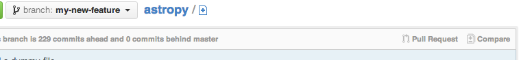

How to make a code contribution¶
This document outlines the process for contributing code to the Astropy project.
Already experienced with git? Contributed before? Jump right to Astropy Guidelines for git.
Pre-requisites¶
Before following the steps in this document you need:
an account on GitHub
a local copy of the astropy source. Instructions for doing that, including the basics you need for setting up git and GitHub, are at Try the development version.
Strongly Recommended, but not required¶
You cannot easily work on the development version of astropy in a python environment in which you also use the stable version. It can be done — but can only be done successfully if you always remember whether the development version or stable version is the active one.
Python virtual environments offer a better solution and take only a few minutes to set up. It is well worth your time.
Not sure what your first contribution should be? Take a look at the Astropy issue list and grab one labeled “package-novice”. These issues are the most accessible ones if you are not familiar with the Astropy source code. Issues labeled as “effort-low” are expected to take a few hours (at most) to address, while the “effort-medium” ones may take a few days. The developers are friendly and want you to help, so don’t be shy about asking questions on the astropy-dev mailing list.
New to git?¶
Some git resources¶
If you have never used git or have limited experience with it, take a few minutes to look at these resources:
Interactive tutorial that runs in a browser
Git Basics, part of a much longer git book.
In practice, you need only a handful of git commands to make contributions to Astropy. There is a more extensive list of Git resources if you want more background.
Double check your setup¶
Before going further, make sure you have set up astropy as described in Try the development version.
In a terminal window, change directory to the one containing your clone of
Astropy. Then, run git remote; the output should look something like this:
your-github-username
astropy
If that works, also run git fetch --all. If it runs without errors then
your installation is working and you have a complete list of all branches in
your clone, your-github-username and astropy.
About names in git¶
git is designed to be a distributed version control system. Each clone of
a repository is, itself, a repository. That can lead to some confusion,
especially for the branch called main. If you list all of the branches
your clone of git knows about with git branch -a you will see there are
three different branches called main:
* main # this is main in your local repo
remotes/your-github-username/main # main on your fork of Astropy on GitHub
remotes/astropy/main # the official development branch of Astropy
The naming scheme used by git will also be used here. A plain branch name,
like main means a branch in your local copy of Astropy. A branch on a
remote, like astropy , is labeled by that remote, astropy/main.
This duplication of names can get very confusing when working with pull
requests, especially when the official main branch, astropy/main,
changes due to other contributions before your contributions are merged in.
As a result, you should never do any work in your main
branch, main. Always work on a branch instead.
Essential git commands¶
A full git tutorial is beyond the scope of this document but this list
describes the few git commands you are likely to encounter in contributing
to Astropy:
git fetchgets the latest development version of Astropy, which you will use as the basis for making your changes.git branchmakes a logically separate copy of Astropy to keep track of your changes.git addstages files you have changed or created for addition to git.git commitadds your staged changes to the repository.git pushcopies the changes you committed to GitHubgit statusto see a list of files that have been modified or created.
Note
A good graphical interface to git makes some of these steps much easier. Some options are described in Get a git GUI (optional).
If something goes wrong¶
git provides a number of ways to recover from errors. If you end up making a git mistake, do not hesitate to ask for help. An additional resource that walks you through recovering from git mistakes is the git choose-your-own-adventure.
Astropy Guidelines for git¶
Don’t use your
mainbranch for anything. Consider Deleting your main branch.Make a new branch, called a feature branch, for each separable set of changes: “one task, one branch” (ipython git workflow).
Start that new feature branch from the most current development version of astropy (instructions are below).
Name your branch for the purpose of the changes, for example
bugfix-for-issue-14orrefactor-database-code.Make frequent commits, and always include a commit message. Each commit should represent one logical set of changes.
Ask on the astropy-dev mailing list if you get stuck.
Never merge changes from
astropy/maininto your feature branch. If changes in the development version require changes to our code you can Rebase, but only if asked.
In addition there are a couple of git naming conventions used in this document:
Change the name of the remote
origintoyour-github-username.Name the remote that is the primary Astropy repository
astropy; in prior versions of this documentation it was referred to asupstream.
Workflow¶
These, conceptually, are the steps you will follow in contributing to Astropy:
Make a new feature branch; you will make your changes on this branch.
Follow The editing workflow to write/edit/document/test code - make frequent, small commits.
From GitHub, Ask for your changes to be reviewed to let the Astropy maintainers know you have contributions to review.
Revise and push as necessary in response to comments on the pull request. Pushing those changes to GitHub automatically updates the pull request.
This way of working helps to keep work well organized, with readable history. This in turn makes it easier for project maintainers (that might be you) to see what you’ve done, and why you did it.
A worked example that follows these steps for fixing an Astropy issue is at Contributing code to Astropy, a worked example.
Some additional topics related to git are in Some other things you might want to do.
Deleting your main branch¶
It may sound strange, but deleting your own main branch can help reduce
confusion about which branch you are on. See deleting main on github for
details.
Fetch the latest Astropy¶
From time to time you should fetch the development version (i.e. Astropy
astropy/main) changes from GitHub:
git fetch astropy --tags
This will pull down any commits you don’t have, and set the remote branches to
point to the latest commit. For example, ‘trunk’ is the branch referred to by
astropy/main, and if there have been commits since
you last checked, astropy/main will change after you do the fetch.
Make a new feature branch¶
Make the new branch¶
When you are ready to make some changes to the code, you should start a new branch. Branches that are for a collection of related edits are often called ‘feature branches’.
Making a new branch for each set of related changes will make it easier for someone reviewing your branch to see what you are doing.
Choose an informative name for the branch to remind yourself and the rest of us
what the changes in the branch are for. Branch names like add-ability-to-fly
or buxfix-for-issue-42 clearly describe the purpose of the branch.
Always make your branch from astropy/main so that you are basing your
changes on the latest version of Astropy:
# Update the mirror of trunk
git fetch astropy --tags
# Make new feature branch starting at astropy/main
git branch my-new-feature astropy/main
git checkout my-new-feature
Connect the branch to GitHub¶
At this point you have made and checked out a new branch, but git does not know it should be connected to your fork on GitHub. You need that connection for your proposed changes to be managed by the Astropy maintainers on GitHub.
The most convenient way for connecting your local branch to GitHub is to git
push this new branch up to your GitHub repo with the --set-upstream
option:
git push --set-upstream your-github-username my-new-feature
From now on git will know that my-new-feature is related to the
your-github-username/my-new-feature branch in your GitHub fork of Astropy.
You will still need to git push your changes to GitHub periodically. The
setup in this section will make that easier because any following pushes of
this branch can be performed without having to write out the remote and branch
names.
Install your branch¶
Ideally you should set up a Python virtual environment just for this fix;
instructions for doing to are at Python virtual environments. Doing so ensures you
will not corrupt your main astropy install and makes it very easy to recover
from mistakes.
Once you have activated that environment, you need to install the version of
astropy you are working on. Do that with:
pip install -e .
For more details on building astropy from source, see
Building Astropy and its Subpackages.
The editing workflow¶
Conceptually, you will:
Make changes to one or more files and/or add a new file.
Check that your changes do not break existing code.
Add documentation to your code and, as appropriate, to the Astropy documentation.
Ideally, also make sure your changes do not break the documentation.
Add tests of the code you contribute.
Commit your changes in git
Repeat as necessary.
In more detail¶
Make some changes to one or more files. You should follow the Astropy Coding Guidelines. Each logical set of changes should be treated as one commit. For example, if you are fixing a known bug in Astropy and notice a different bug while implementing your fix, implement the fix to that new bug as a different set of changes.
Test that your changes do not lead to regressions, i.e. that your changes do not break existing code, by running the Astropy tests. You can run all of the Astropy tests from ipython with:
import astropy astropy.test()
If your change involves only a small part of Astropy, e.g. Time, you can run just those tests:
import astropy astropy.test(package='time')
Tests can also be run from the command line while in the package root directory, e.g.:
pytestTo run the tests in only a single package, e.g. Time, you can do:
pytest -P time
For more details on running tests, please see Testing Guidelines.
Make sure your code includes appropriate docstrings, in the Numpydoc format. If appropriate, as when you are adding a new feature, you should update the appropriate documentation in the
docsdirectory; a detailed description is in Writing Documentation.If you have sphinx installed, you can also check that the documentation builds and looks correct by running, from the
astropydirectory:cd docs make html
The last line should just state
build succeeded, and should not mention any warnings. (For more details, see Writing Documentation.)Add tests of your new code, if appropriate. Some changes (e.g. to documentation) do not need tests. Detailed instructions are at Writing tests, but if you have no experience writing tests or with the pytest testing framework submit your changes without adding tests, but mention in the pull request that you have not written tests. An example of writing a test is in Stop and think: Any more tests or other changes?.
Stage your changes using
git addand commit them usinggit commit. An example of doing that, based on the fix for an actual Astropy issue, is at Contributing code to Astropy, a worked example.Note
Make your git commit messages short and descriptive. If a commit fixes an issue, include, on the second or later line of the commit message, the issue number in the commit message, like this:
Closes #123. Doing so will automatically close the issue when the pull request is accepted.Some modifications require more than one commit; if in doubt, break your changes into a few, smaller, commits rather than one large commit that does many things at once. Repeat the steps above as necessary!
Add a changelog entry¶
Add a changelog fragment briefly describing the change you made by creating
a new file in docs/changes/<sub-package>/. The file should be named like
<PULL REQUEST>.<TYPE>.rst, where <PULL REQUEST> is a pull request
number, and <TYPE> is one of:
feature: New feature.api: API change.bugfix: Bug fix.other: Other changes and additions.
An example entry, for the changes in PR 1845, the file would be
docs/changes/wcs/1845.bugfix.rst and would contain:
``astropy.wcs.Wcs.printwcs`` will no longer warn that ``cdelt`` is
being ignored when none was present in the FITS file.
If you are opening a new pull request, you may not know its number yet, but you can add it after you make the pull request. If you’re not sure where to put the changelog entry, wait at least until a maintainer has reviewed your PR and assigned it to a milestone.
When writing changelog entries, do not attempt to make API reference links by using single-backticks. This is because the changelog (in its current format) runs for the history of the project, and API references you make today may not be valid in a future version of Astropy. However, use of double-backticks for monospace rendering of module/class/function/argument names and the like is encouraged.
Copy your changes to GitHub¶
If you followed the instructions to Connect the branch to GitHub then you can simply use:
git push
If you skipped that step then you need to write out the remote and branch names:
git push your-github-username my-new-feature
Ask for your changes to be reviewed¶
A pull request on GitHub is a request to merge the changes you have made into another repository.
When you are ready to ask for someone to review your code and consider merging it into Astropy:
Go to the URL of your fork of Astropy, e.g.,
https://github.com/your-user-name/astropy.Use the ‘Switch Branches’ dropdown menu to select the branch with your changes:
Click on the ‘Pull request’ button:
Enter a title for the set of changes, and some explanation of what you’ve done. If there is anything you’d like particular attention for, like a complicated change or some code you are not happy with, add the details here.
If you don’t think your request is ready to be merged, just say so in your pull request message. This is still a good way to start a preliminary code review.
You may also opt to open a work-in-progress pull request. If you do so, instead of clicking “Create pull request”, click on the small down arrow next to it and select “Create draft pull request”. This will let the maintainers know that your work is not ready for a full review nor to be merged yet. In addition, if your commits are not ready for CI testing, you should also use
[ci skip]or[skip ci]directive in your commit message.
Revise and push as necessary¶
You may be asked to make changes in the discussion of the pull request. Make those changes in your local copy, commit them to your local repo and push them to GitHub. GitHub will automatically update your pull request.
Do Not Create a Merge Commit¶
If your branch associated with the pull request falls behind the main
branch of https://github.com/astropy/astropy, GitHub might offer you the option
to catch up or resolve conflicts via its web interface, but do not use this. Using
the web interface might create a “merge commit” in your commit history, which is
undesirable, as a “merge commit” can introduce maintenance overhead for the
release manager as well as undesirable branch structure complexity. Do not use the git pull command either.
Instead, in your local checkout, do a fetch and then a rebase, and
resolve conflicts as necessary. See Rebase, but only if asked and How to rebase
for further information.
Rebase, but only if asked¶
Sometimes the maintainers of Astropy may ask a pull request to be rebased or squashed in the process of reviewing a pull request for merging into the main Astropy main repository.
The decisions of when to request a squash or rebase are left to individual maintainers. These may be requested to reduce the number of visible commits saved in the repository history, or because of code changes in Astropy in the meantime. A rebase may be necessary to allow the Continuous Integration tests to run. Both involve rewriting the git history, meaning that commit hashes will change, which is why you should do it only if asked.
Conceptually, rebasing means taking your changes and applying them to the latest version of the development branch of the official Astropy as though that was the version you had originally branched from. Each individual commit remains visible, but with new metadata/commit hashes. Squashing commits changes the metadata/commit hash, and also removes separate visibility of individual commits; a new commit and commit message will only contain a textual list of the earlier commits.
It is easier to make mistakes rebasing than other areas of git, so before you start make a branch to serve as a backup copy of your work:
git branch tmp my-new-feature # make temporary branch--will be deleted later
After altering the history, e.g. with git rebase, a normal git push
is prevented, and a git push --force will be required.
Warning
Do not update your branch with git pull. Pulling changes from
astropy/main includes merging the branches, which combines them in a
way that preserves the commit history of both. The purpose of rebasing is
rewriting the commit history of your branch, not preserving it.
How to rebase¶
Behind the scenes, git is deleting the changes and branch you made, making the changes others made to the development branch of Astropy, then re-making your branch from the development branch and applying your changes to your branch.
The actual rebasing is usually easy:
git fetch astropy main # get the latest development astropy
git rebase astropy/main my-new-feature
You are more likely to run into conflicts here — places where the changes you made conflict with changes that someone else made — than anywhere else. Ask for help if you need it. Instructions are available on how to resolve merge conflicts after a Git rebase.
How to squash¶
Typically we ask to squash when there was a fair amount of trial and error, but the final patch remains quite small, or when files were added and removed (especially binary files or files that should not remain in the repository) or if the number of commits in the history is disproportionate compared to the work being carried out (for example 30 commits gradually refining a final 10-line change). Conceptually this is equivalent to exporting the final diff from a feature branch, then starting a new branch and applying only that patch.
Many of us find that is it actually easiest to squash using rebase. In particular, you can rebase and squash within the existing branch using:
git fetch astropy
git rebase -i astropy/main
The last command will open an editor with all your commits, allowing you to squash several commits together, rename them, etc. Helpfully, the file you are editing has the instructions on what to do.
How to push¶
After using git rebase you will still need to push your changes to
GitHub so that they are visible to others and the pull request can be
updated. Use of a simple git push will be prevented because of the
changed history, and will need to be manually overridden using:
git push --force
If you run into any problems, do not hesitate to ask. A more detailed conceptual discussing of rebasing is at Rebasing on trunk.
Once the modifications and new git history are successfully pushed to GitHub you can delete any backup branches that may have been created:
git branch -D tmp